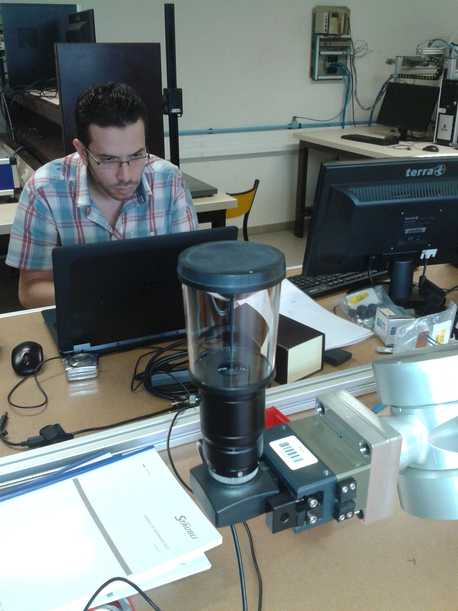

Publications

Brevets
- Method for multi-view mesh texturing and corresponding device. Youssef Alj, Guillaume
Boisson, Philippe Bordes, Luce Morin, Muriel Pressigout. United States Patent, Dec. 4, 2014.
pdf
- Method for modelling a 3D scene and corresponding device. Youssef Alj, Guillaume
Boisson, Philippe Bordes, Luce Morin, Muriel Pressigout. United States Patent, Jan. 12, 2016.
pdf
Conférences internationales
- Space Carving MVD Sequences for Modeling Natural 3D Scenes. Youssef Alj, Guillaume Boisson, Philippe Bordes, Muriel Pressigout, Luce Morin.
Three-Dimensional Image Processing (3DIP) and Applications II, Jan 2012, United States. pp.1-8.
pdf
- Multi-texuring 3D models: how to choose the best texture
Youssef Alj, Guillaume Boisson, Philippe Bordes, Muriel Pressigout, Luce
Morin. IC3D, Dec 2012, Belgium.
pdf
- Youssef Alj, Guillaume Caron. Featureless omnidirectional vision-based control of non-holonomic mobile robots. IEEE Int. Conf. on Ubiquitous Robots and Ambiant Intelligence, URAI'15, Oct 2015, Goyang, South Korea. pp.95-100.
pdf
Communications orales
- Omnidirectional photometric visual path following for wheelchair autonomous driving. Youssef Alj, Guillaume Caron, Nicolas Ragot.
1st Healthcare Technology Days, CARETECH, Dec 2014, Rouen, France.
pdf
- Modélisation de Scènes Naturelles à Partir de Séquences Vidéos Multi-vue plus
Profondeur (MVD). Youssef Alj, Guillaume
Boisson, Philippe Bordes, Luce Morin, Muriel Pressigout. CORESA May 2012, France. pp.35. pdf
Thèse de doctorat
- Space Carving multi-view video plus depth sequences for representation and transmission of 3DTV and FTV contents. INSA de Rennes 2013.
Manuscrit de thèse